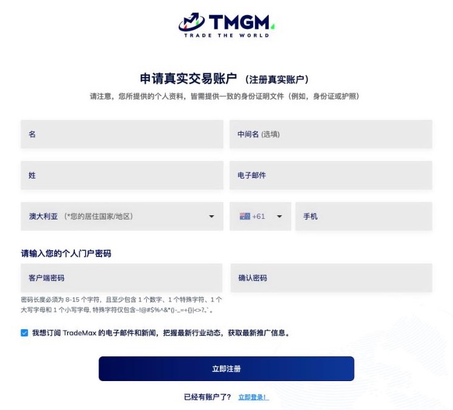

一句话答案
通过满返网的开户按钮注册，或自行在TMGM官方渠道注册且未使用其他代理链接或邀请码，都可以申请返佣。自行注册的须在注册3天内提交注册邮箱；满返网只需注册邮箱，资格以平台审核为准。超过3天请发邮件咨询。
两种开户方式，都只需事后提交注册邮箱
方式一：点满返网的开户按钮。开户链接已经内置在按钮里，不用填邀请码或推广码。
方式二：自己在TMGM官方渠道注册。只要没有用其他代理的链接或邀请码，注册3天内提交注册邮箱即可申请，详见刚注册TMGM怎么申请返佣。
两种方式注册后，都只需向满返网提交注册邮箱。不用注册本站会员，满返网不需要密码或身份证件；返佣资格以平台审核为准。
注册界面预览
注册表中的资料由本人填写，姓名应和身份证件上的信息一致。

- 名 / 中间名（选填）/ 姓：和身份证件上的信息一致；中间名是选填项。
- 电子邮件：填写本人使用的邮箱，以后提交返佣申请就用这个邮箱。
- 居住国家/地区：按实际居住地选，页面默认值不一定是你的地区。
- 手机：选择对应的电话区号，填写本人手机号。
- 客户门户密码：8-15位，至少1个数字、1个特殊字符、1个大写字母和1个小写字母；在确认密码栏再输入一次。
- 订阅邮件：可选，按自己的意愿勾选或取消。
- 立即注册：核对填写内容后，点击按钮提交注册表。
提交这张表单后，TMGM还会继续个人信息、账户配置、问卷、验证四个步骤，请按平台页面提示自行填写。不要把密码或验证码交给任何人。
全程中文服务
TMGM注册页可以选择简体中文。满返网的开户、申请、查询和问题都可以用中文联系。
为什么开户链接会影响返佣关系
返佣通常依赖账户在注册阶段建立的客户来源和代理归属。通过指定的TMGM开户链接注册，可以让后台识别对应来源，便于后续确认返佣权限。
若使用其他代理的链接或邀请码注册，不能申请本站返佣。自行在TMGM官方渠道注册且未使用其他代理链接或邀请码的，注册3天内提交注册邮箱即可申请，结果以平台审核为准。
TMGM开户注册步骤
- 打开注册页面：选择上面的任一种开户方式，核对浏览器地址和页面品牌信息，不要在陌生私信中的缩短链接页面输入个人资料。
- 填写注册表：按上方注册界面预览填写本人资料，核对后点击「立即注册」。
- 完成平台后续步骤：按页面提示依次完成个人信息、账户配置、问卷、验证。账户配置时可比较交易品种、点差和手续费；身份认证资料由本人直接向TMGM提交。密码和验证码不要转发给任何人。
- 提交注册邮箱：注册后通过满返网申请表提交注册邮箱；自行注册且未使用其他代理链接或邀请码的，须在注册3天内提交。满返网不需要密码或证件图片。
- 确认返佣关系：返佣资格以平台审核为准，在确认前不要假设返佣已经生效。
开户后如何申请返佣
如何选择账户类型
开户时不要只看某一项返佣数字。不同账户组别在点差、手续费、产品覆盖和返佣结构上存在差异：
- 交易频率较低的客户，应比较常用产品的实际点差和整体成本。
- 高频交易客户，更需要关注RAW或ECN类账户的手续费与裸点差组合。
- 主要交易黄金、外汇或加密产品的客户，应分别查看对应品种的定价结构。
- 最终账户适用性取决于个人交易方式，不应把一般信息当作个人投资建议。
满返网首页提供账户和返佣标准对照，实际数据仍以开户时平台页面和后台审核为准。
开户链接安全检查
- 确认页面使用HTTPS，并核对域名和页面内容是否正常。
- 不要下载陌生人提供的远程控制软件，也不要让他人代为操作身份认证。
- 不要把验证码、交易密码、投资者密码或银行卡信息发给客服。
- 平台软件下载优先使用TMGM官方页面、Apple App Store或Google Play入口。
- 遇到“保证盈利”“代客操作”“先转账后开户”等说法应立即停止。
常见问题
注册时需要填邀请码吗？
不需要：用满返网的开户按钮，开户链接已内置，不用填邀请码或推广码；自己在TMGM官网注册且没用其他代理链接或邀请码的，注册3天内提交注册邮箱即可申请，结果以平台审核为准。
已经自己在TMGM官网注册了，还能申请返佣吗？
注册3天内、没用其他代理链接或邀请码的可以申请，只需提交注册邮箱，结果以平台审核为准；超过3天的请发邮件咨询。
TMGM注册页有中文吗？
有，TMGM注册页可以选择简体中文。满返网的开户、申请、查询和问题也都可以用中文联系。
注册表上的名和姓怎么填？
名和姓应与身份证件上的信息一致，分别填写在对应栏位；中间名为选填项。
开户链接打开后可以切换语言吗？
通常可以在注册页面切换支持的语言。注册资料应保持真实一致，避免因语言切换重复建立账户。
注册后没有马上交易，会影响返佣吗？
开户和返佣权限是不同环节。建议注册完成后及时提交申请并确认账户归属，在权限确认前不要假设返佣已经自动生效。
已有账户需要重新注册一个吗？
注册3天内且未使用其他代理链接或邀请码的，不需要，直接提交注册邮箱申请即可，结果以平台审核为准。超过3天的请发邮件咨询，满返网会按账户情况说明处理方式。开户必须用本人真实资料，不要用虚假资料或他人身份。
刚注册的交易账户显示“禁用”，正常吗？
正常。新注册的交易账户短时间内可能显示禁用标志，一般过几分钟会自动消失。如果长时间没有消失，再联系客户经理查看。
在国外注册需要地址证明吗？
通常需要。具体要求按注册地区和平台审核为准，资料要和本人信息一致。
可以先开模拟账户练习吗？
可以。登录客户门户后直接申请，免费。不熟悉的品种可以先用模拟账户熟悉行情和下单方式。
账户杠杆在哪里调整？
在客户门户里调整，需要验证密码和短信验证码。停盘前和重大数据公布前后，平台可能临时调低杠杆，请留意平台公告。
TMGM有美分账户吗？
截至2026年10月，中国大陆地区还没有开放美分账户，以平台公告为准。